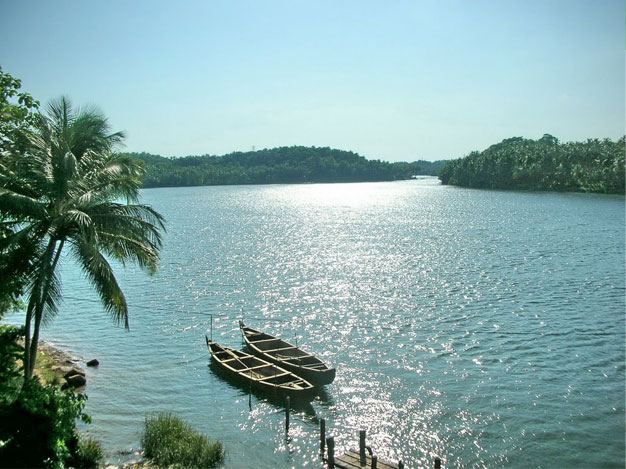

Nilambur

Nilambur, most popularly known as the land of teak plantations, is a famous town in Malappuram district. The place is noted for its vast expanse of forest along with its varied wildlife habitats, rivers and waterfalls. It is situated close to the Nilgiri range of the Western Ghats on the banks of the Chaliyar River
Considered to be the oldest in the world, the teak plantation here obtained its name after H.V. Conolly, the Malabar district collector during the British rule. He was instrumental in planting teak in the entire Nilambur area. Chathu Menon, a forest officer under Conolly, organised the hectic task of planting the saplings. Chathu Menon was laid to rest in the teak garden in Conolly's Plot.The teak plantation in Nilambur is situated about four kilometres from the town, on the Nilambur - Gudallur road. A well-equipped teak museum is another attraction of Nilambur. This museum is a sub-centre of the Kerala Forest Research Institute. Arranged in the two-storeyed building are exhibits, articles and details of historic, aesthetic and scientific value, which give information on all aspects of the teak to visitors
How to Get Here
Nearest railway station: Nilambur is the terminus of the Shornur - Nilambur railway line Nearest airport: Karipur International Airport, about 20 km from Malappuram town
Kottakkunnu

Situated near the district collectorate in Malappuram, Kottakkunnu, is a recently developed tourist spot in the district. Kottakkunnu derives its name from an old fort, which was built by the Zamorins of Kozhikode (in Malayalam kotta means fort and kunnu means hill). One can still find here traces of this fort.
The Municipality of Malappuram City has started Kottakkunnu Amusement park - a water theme park in the valley of Kottakunnu. Visitors are allowed up to 9 p.m. Nearby Kottakkunnu is the famous Vettakkorumakan temple and the Siva temple with several murals of Malabar.
How to Get Here
Nearest main public bus station: Malappuram Municipal Bus Station - 1 km, KSRTC Bus station - 800 m Nearest railway station: Angadipuram - 17 km Nearest main railway stations: Tirur - 28 km and Calicut - 50 km Nearest airport: Karipur International Airport, about 25 km
Chaliyar
Considered to be the fourth longest river in Kerala, the Chaliyar River with more than 150 km length, makes its way through Malappuram district. It is also known by the name Beypore River. Some of the famous towns and villages located on the banks of the Chaliyar River include Nilambur, Edavanna, Areekode, Kizhuparamba, Cheruvadi, Mavoor, Peruvayal and Feroke. The Chaliyar River is unique as it will not go dry even in heavy drought season.
How to Get Here
Nilambur Road Rail Way Station is the very nearby railway stations to Chaliyar.Nearest airport: Karipur International Airport